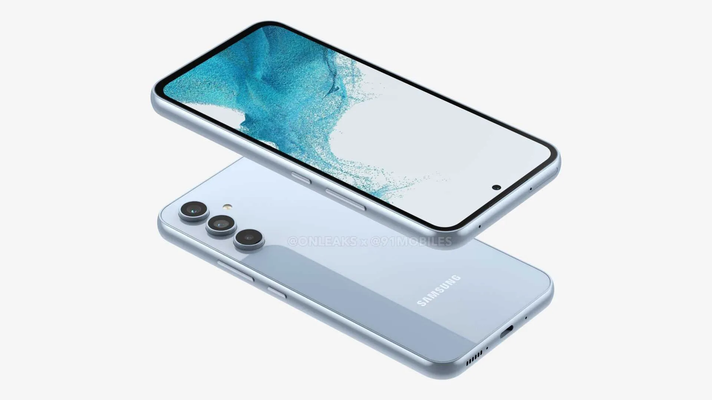

Samsung Galaxy A34 5G: no hace falta una revolución para triunfar en la gama media

Hablar de un móvil de la gama 'A' de Samsung es hablar de una gama destinada a arrasar en ventas. Y si concretamos en el Samsung Galaxy A34, más todavía si tenemos en cuenta que es el de los más económicos. No es un flagship como los Galaxy S23, pero eso no le resta atractivos para quien busque un móvil de gama media.
Ficha tecnica del Samsung galaxy A34
PANTALLA
- Super AMOLED de 6,6 pulgadas
- Resolución FullHD+ de 1.080 x 2.340p
- Tasa de refresco de 120 Hz
DIMENSIONES Y PESO
- 161,3 x 78,1 x 8,2 mm
- 199 gramos
PROCESADOR
- Exynos 1380 2,4 GHz, 2 GHz
MEMORIAS
- 8 RAM
- 256 GB
MicroSD hasta 1 TB
CÁMARAS TRASERAS
- Principal: 48 Mpx f/,18
- Gran angular: 8 Mpx f/2,2
- Macro: 5 Mpx f/2,4
CÁMARA FRONTAL
- 13 Mpx f/2,2
BATERÍA
- 5.000 mAh
SISTEMA OPERATIVO
- Android 13
- OneUI 5.1
CONECTIVIDAD
- 5G
- WiFi AC
- Bluetooth 5.3
- GPS
- NFC
- UWB
- USB-C
OTROS
- Altavoces estéreo
- Protección contra polvo y agua IP67
- Sensor de huellas en pantalla
PRECIO
- 469 euros
Diseño made in Samsung y con una pantalla que vuelve a ser la estrella
De la pantalla solo podemos hablar maravillas. O casi. Fabricado por Samsung, este panel 'Super AMOLED' es una auténtica maravilla para un gama media como el Galaxy A34. No da problemas si cambiamos de ángulo de visión, tiene buena temperatura de color sin saturar en exceso y encima se sube al carro de los 120 Hz para hacer más fluida la experiencia de desplazamiento. Y si bien el brillo en exteriores puede ser una pega, lo cierto es que no da tanto problema como otros móviles de gama media.
Lo peor que tiene la pantalla es el lector de huellas que lleva integrado, el cual deja mucho que desear. Samsung ha optado nuevamente por integrar un sensor óptico que se eterniza en el reconocimiento. Y no es algo que directamente se pueda achacar al software, dado que no sucede en otros terminales de la marca que lleven ahí el sensor.
Lo peor que tiene la pantalla es el lector de huellas que lleva integrado, el cual deja mucho que desear. Samsung ha optado nuevamente por integrar un sensor óptico que se eterniza en el reconocimiento. Y no es algo que directamente se pueda achacar al software, dado que no sucede en otros terminales de la marca que lleven ahí el sensor.
Un salto en rendimiento muy necesario con una autonomía bestial
A diferencia de su antecesor, lastrado por el Exynos 1280, este terminal ofrece un buen rendimiento general equilibrando software y hardware. Ni siquiera la última capa de One UI basada en Android 13, y de la que hablaremos más adelante, acaba lastrando la experiencia. El móvil se siente fluido en acciones cotidianas sin mostrar lag. En tareas algo más exigentes flojea como era de esperar. Por ejemplo, con juegos de alta exigencia gráfica se nota que va 'a tirones' y eleva su temperatura, pero como decíamos, no es tampoco una sorpresa siendo un terminal de gama media no especializado en el gaming.